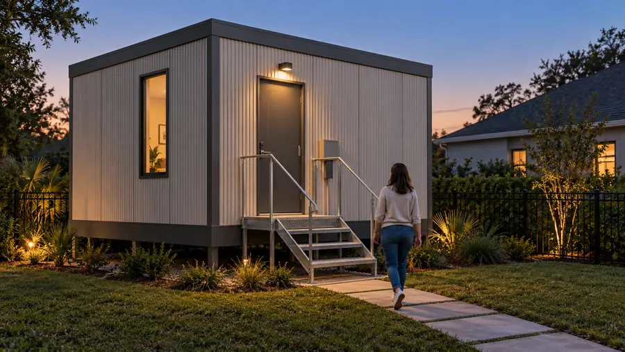
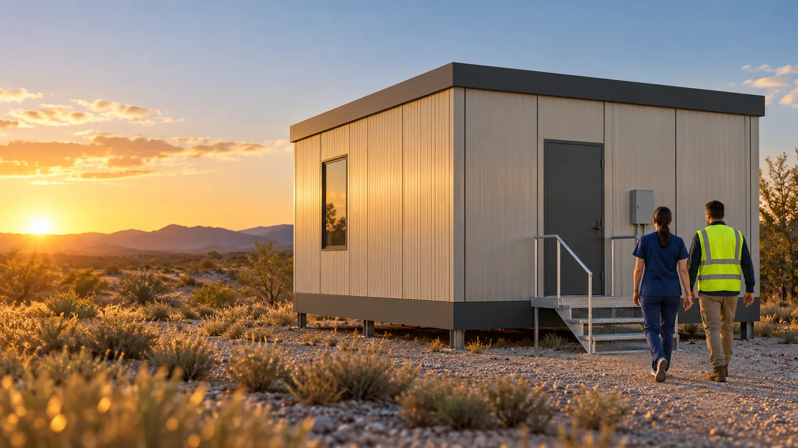
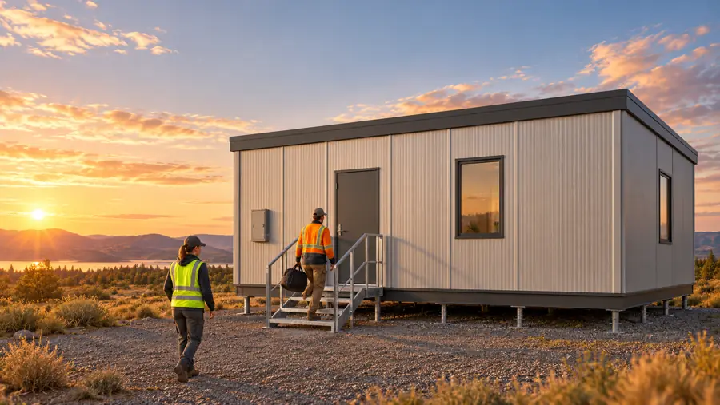
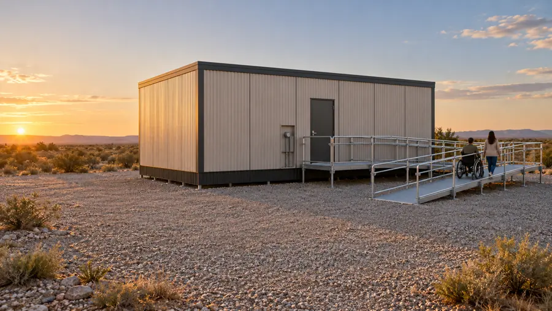
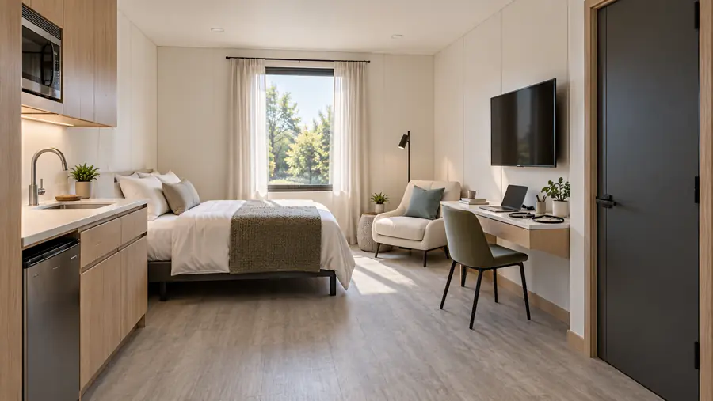
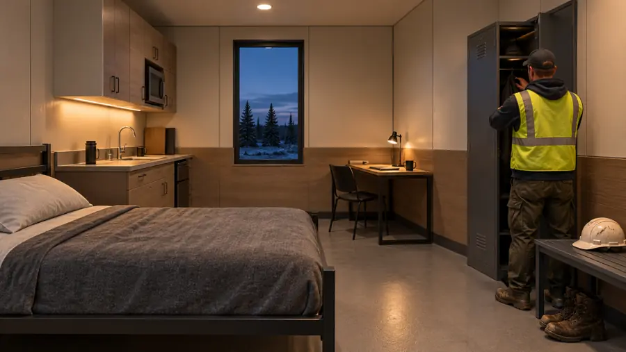
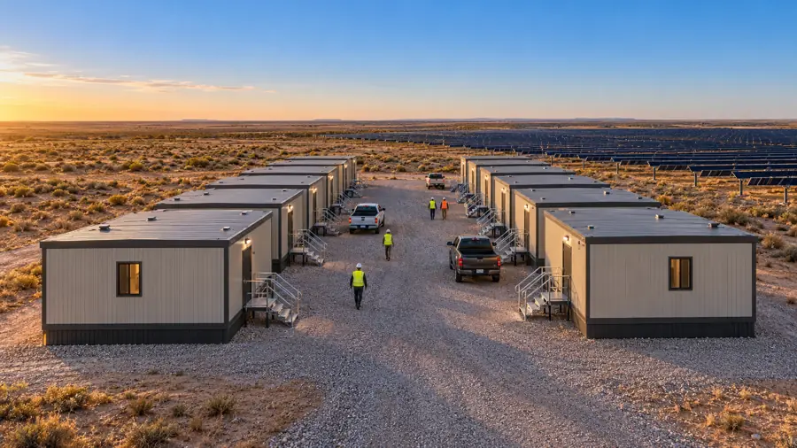
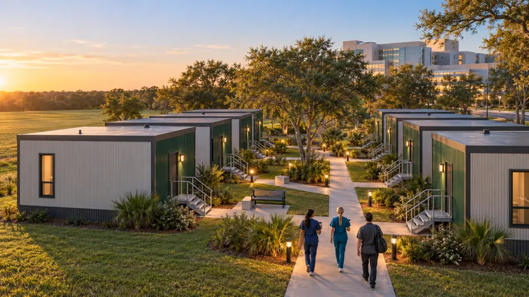
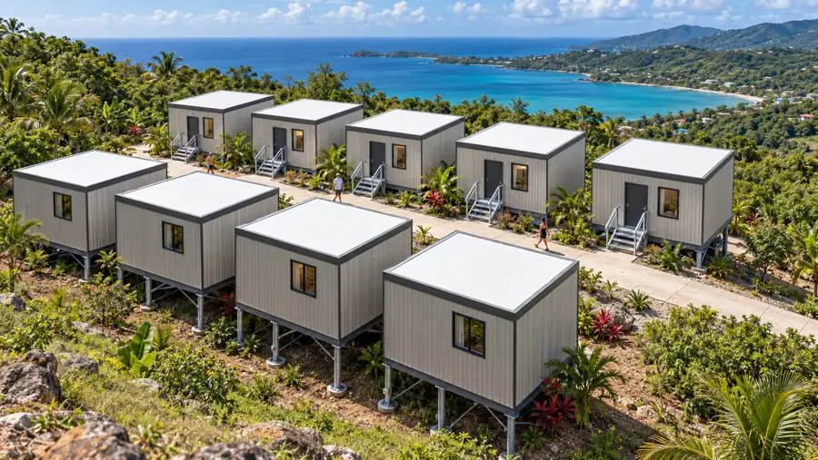
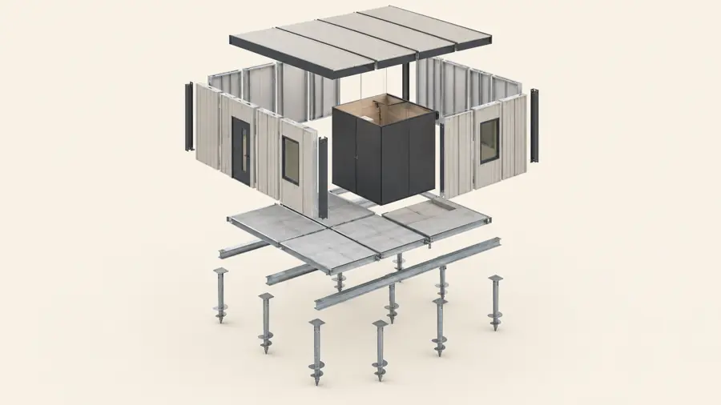

S1 · D2-S
Single or shared room
- Outside
- 17′-2″ × 17′-2″
- Area
- 295 sq ft gross · 256 sq ft inside
- Sleeps
- S1: one, full bed · D2-S: two, twin XL beds
- Bath
- One bath pod

SUNDELLO / WORKFORCE HOUSING
Meet Outpost. Private rooms with a bath pod and kitchenette, built from steel and MgO panels on helical ground screws. One unit or a whole camp.
THE UNITS
Every Outpost unit is 16 ft deep inside, on the same 4 ft wall module. That keeps parts standard from a single backyard unit to a hundred-unit camp.

S1 · D2-S

D2-K

S-A
Concept renderings. Accessibility requirements are confirmed for each project. Final layout and dimensions require confirmation.
INSIDE
Every room has a kitchenette, a desk and a factory-built bath pod. Walls are factory-finished MgO panels. Pick the pack that suits who is staying.


ON SITE
Doors and steps face a shared lane or courtyard. Rows mirror each other door to door. Ground screws set every floor level, even on a slope.



HOW IT GOES TOGETHER
Ground screws are shown as a foundation concept. The final foundation, connections and installation depend on site conditions and engineering.

PLAN YOUR SITE
Enter the space you have, from a backyard to a long crew-camp pad. Choose units, layout, colors and interior, then send the project to us.
Drag to turn · scroll or pinch to zoom · concept geometry
START A CONVERSATION
Prefer to talk it through first? Send a short note. If you used the planner above, send it from the planner’s last step instead so the layout comes with it.